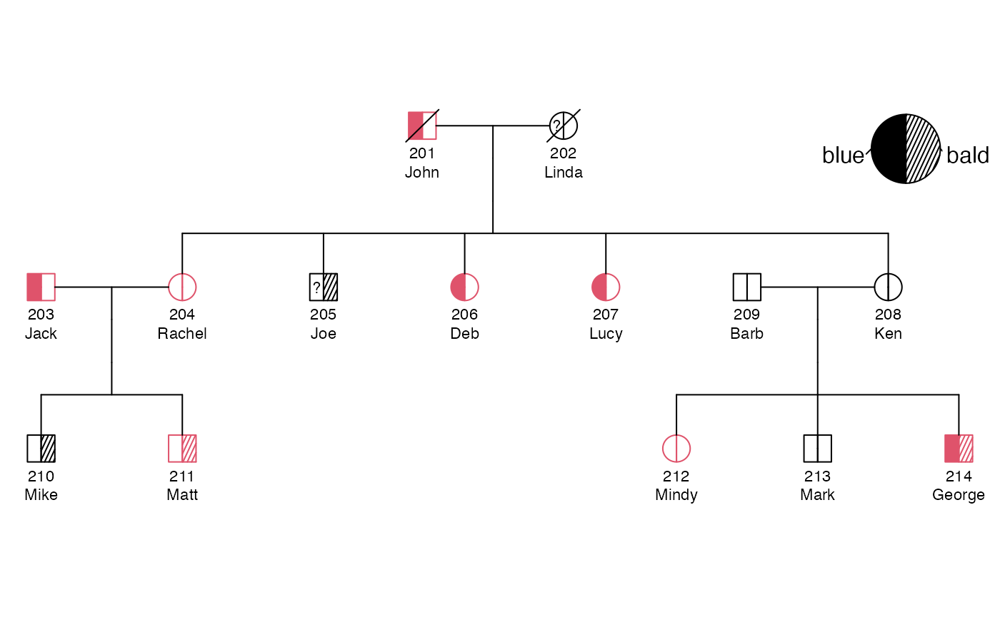
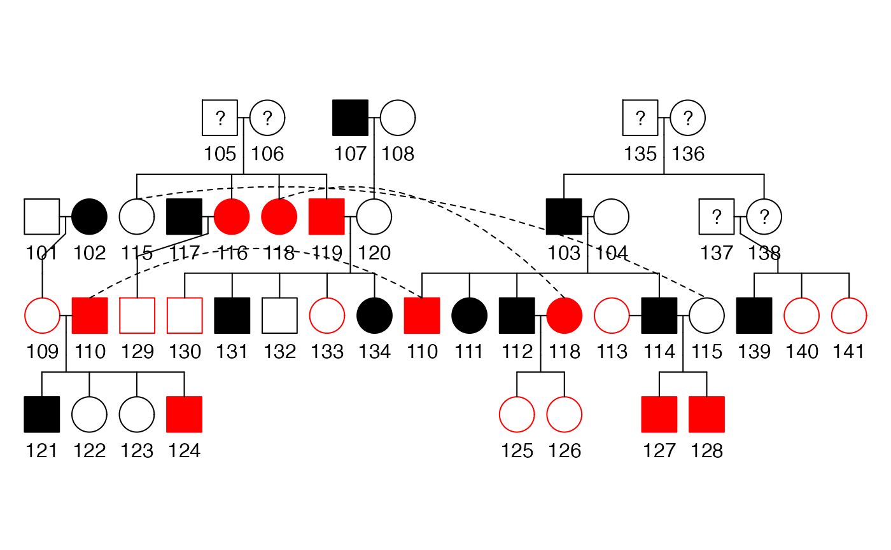
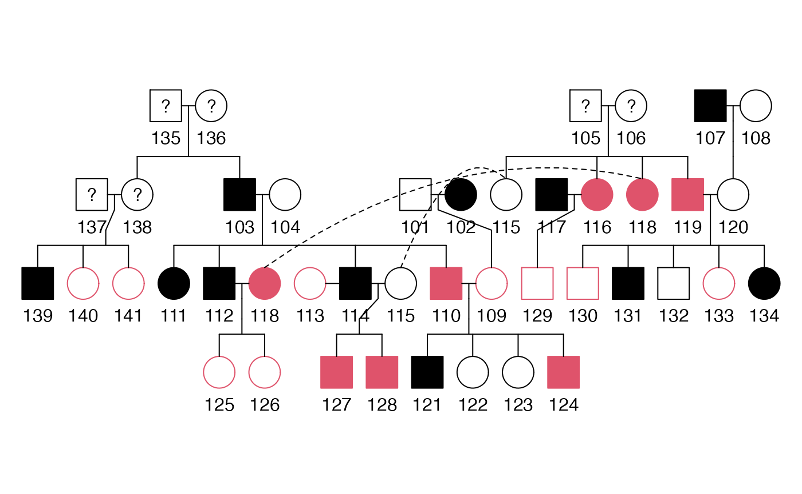
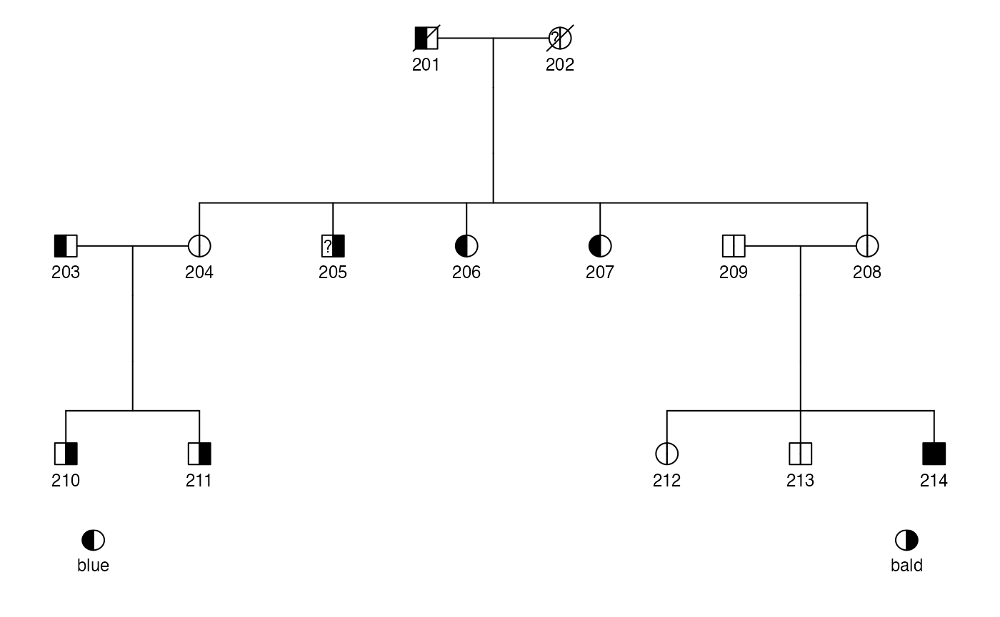
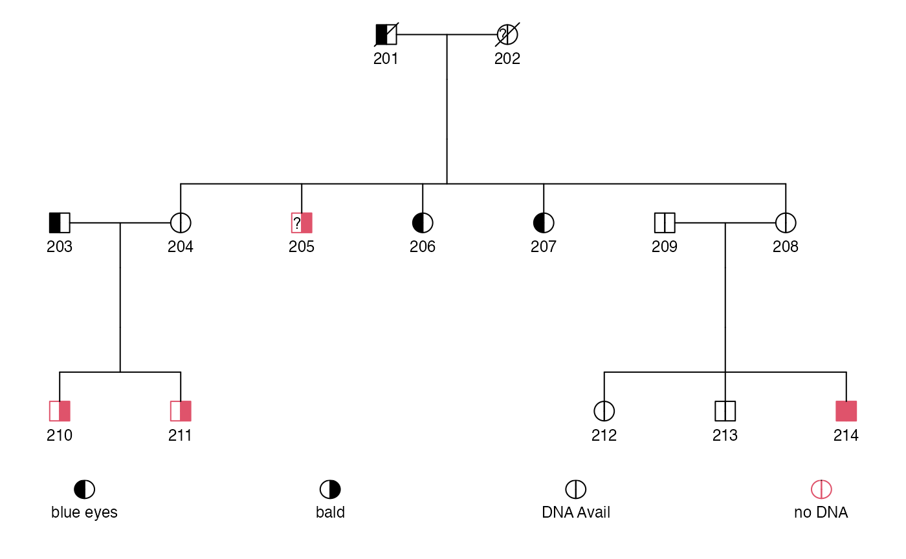
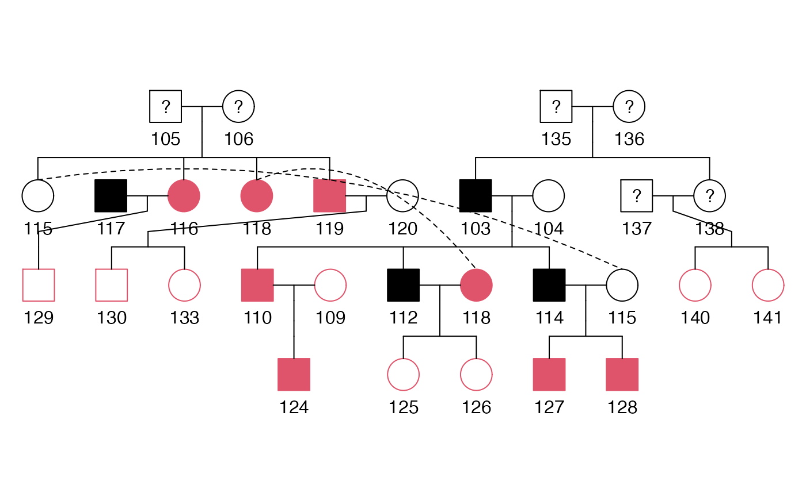
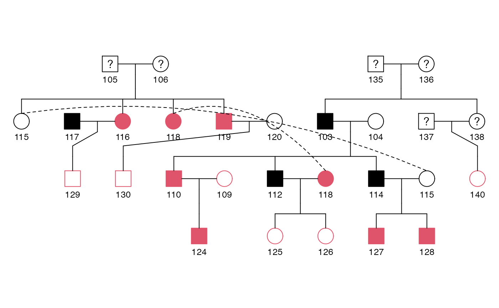

kinship2_walkthrough.Rmdvignette: | % % % —
This document is a brief tutorial for the kinship2 package, with examples of creating pedigree objects and kinship matrices, and other pedigree utilities. If the kinship2 package is not loaded, we load it now.
Two datasets are provided within the kinship2 package: + minnbreast: 17 families from a breast cancer study + sample.ped: two sample pedigrees, with 41 and 14 subjects
This vignette uses the two pedigrees in sample.ped. For more information on these datasets, see help(minnbreast) and help(sample.ped).
First, we load sample.ped and look at some of the values in the dataset, and create a pedigreeList object using the pedigree() function. We use the required arguments \(id\), \(father\), \(mother\), and \(sex\). The \(famid\) argument is required to make a {} object, but not for a single pedigree} object.
data(sample.ped)
sample.ped[1:10, ]
ped id father mother sex affected avail
1 1 101 0 0 1 0 0
2 1 102 0 0 2 1 0
3 1 103 135 136 1 1 0
4 1 104 0 0 2 0 0
5 1 105 0 0 1 NA 0
6 1 106 0 0 2 NA 0
7 1 107 0 0 1 1 0
8 1 108 0 0 2 0 0
9 1 109 101 102 2 0 1
10 1 110 103 104 1 1 1
pedAll <- pedigree(id = sample.ped$id, dadid = sample.ped$father, momid = sample.ped$mother,
sex = sample.ped$sex, famid = sample.ped$ped)
print(pedAll)
Pedigree list with 55 total subjects in 2 familiesThe {} object can be subset to individual pedigrees by their family id. The pedigree object has a print and plot method, which we show below. The print method prints a short summary of the pedigree, while the figure below displays the smaller pedigree.
To “break” the pedigree, we can manipulate the sex value to not match the parent value (in this example, we change \(203\) from a male to a female, even though \(203\) is a father). To do this, we first subset datped2, locate the id column, and match it to a specific id (in this case, \(203\)). Within id \(203\), then locate in the sex column. Assign this subset to the incorrect value of 2 (female) to change the original/correct value of 1 (male).
To further break the pedigree, we can delete subjects who seem irrelevant to the pedigree (in this example, we delete \(209\) because he is a married-in father). To do this, we subset datped2 and use the -which() function to locate and delete the specified subject (in this case, \(209\)). Reassign this code to datped22 to drop the specified subject entirely.
datped2 <- sample.ped[sample.ped$ped %in% 2, ]
datped2[datped2$id %in% 203, "sex"] <- 2
datped2 <- datped2[-which(datped2$id %in% 209), ]An error occurs when the pedigree() function notices that id \(203\) is not coded to be male (1) but is a father. To correct this, we simply employ the fixParents() function to adjust the sex value to match either mother/momid or father/dadid. fixParents() will also add back in any deleted subjects, further fixing the pedigree.
To correct this, we simply employ the fixParents() function to adjust the sex value to match either mother/momid or father/dadid. fixParents() will also add back in any deleted subjects, further fixing the pedigree.
fixped2 <- with(datped2, fixParents(id, father, mother, sex))
fixped2
id momid dadid sex
1 201 0 0 1
2 202 0 0 2
3 203 0 0 1
4 204 202 201 2
5 205 202 201 1
6 206 202 201 2
7 207 202 201 2
8 208 202 201 2
9 210 204 203 1
10 211 204 203 1
11 212 208 209 2
12 213 208 209 1
13 214 208 209 1
14 209 0 0 1
ped2 <- with(fixped2, pedigree(id, dadid, momid, sex))
plot(ped2)If the fix is straightforward (changing one sex value based on either being a mother or father), fixParents() will resolve the issue. If the issue is more complicated, say if \(203\) is coded to be both a father and a mother, fixParents will not know which one is correct and therefore the issue will not be resolved.
A common use for pedigrees is to make a matrix of kinship coefficients that can be used in mixed effect models. A kinship coefficient is the probability that a randomly selected allele from two people at a given locus will be identical by descent (IBD), assuming all founder alleles are independent. For example, we each have two alleles per autosomal marker, so sampling two alleles with replacement from our own DNA has only \(p=0.50\) probability of getting the same allele twice.
We use {} to calculate the kinship matrix for \(ped2basic\). The result is a special symmetrix matrix class from the \(Matrix\) R package, which is stored efficiently to avoid repeating elements.
kin2 <- kinship(ped2basic)
kin2
201 202 203 204 205 206 207 208 209 210 211 212
201 0.500 0.000 0.00 0.250 0.250 0.250 0.250 0.250 0.00 0.1250 0.1250 0.1250
202 0.000 0.500 0.00 0.250 0.250 0.250 0.250 0.250 0.00 0.1250 0.1250 0.1250
203 0.000 0.000 0.50 0.000 0.000 0.000 0.000 0.000 0.00 0.2500 0.2500 0.0000
204 0.250 0.250 0.00 0.500 0.250 0.250 0.250 0.250 0.00 0.2500 0.2500 0.1250
205 0.250 0.250 0.00 0.250 0.500 0.250 0.250 0.250 0.00 0.1250 0.1250 0.1250
206 0.250 0.250 0.00 0.250 0.250 0.500 0.250 0.250 0.00 0.1250 0.1250 0.1250
207 0.250 0.250 0.00 0.250 0.250 0.250 0.500 0.250 0.00 0.1250 0.1250 0.1250
208 0.250 0.250 0.00 0.250 0.250 0.250 0.250 0.500 0.00 0.1250 0.1250 0.2500
209 0.000 0.000 0.00 0.000 0.000 0.000 0.000 0.000 0.50 0.0000 0.0000 0.2500
210 0.125 0.125 0.25 0.250 0.125 0.125 0.125 0.125 0.00 0.5000 0.2500 0.0625
211 0.125 0.125 0.25 0.250 0.125 0.125 0.125 0.125 0.00 0.2500 0.5000 0.0625
212 0.125 0.125 0.00 0.125 0.125 0.125 0.125 0.250 0.25 0.0625 0.0625 0.5000
213 0.125 0.125 0.00 0.125 0.125 0.125 0.125 0.250 0.25 0.0625 0.0625 0.2500
214 0.125 0.125 0.00 0.125 0.125 0.125 0.125 0.250 0.25 0.0625 0.0625 0.2500
213 214
201 0.1250 0.1250
202 0.1250 0.1250
203 0.0000 0.0000
204 0.1250 0.1250
205 0.1250 0.1250
206 0.1250 0.1250
207 0.1250 0.1250
208 0.2500 0.2500
209 0.2500 0.2500
210 0.0625 0.0625
211 0.0625 0.0625
212 0.2500 0.2500
213 0.5000 0.2500
214 0.2500 0.5000For family 2, see that the row and column names match the id in the figure below, and see that each kinship coefficient with themselves is \(0.50\), siblings are \(0.25\) (e.g. \(204-205\)), and pedigree marry-ins only share alleles IBD with their children with coefficient \(0.25\) (e.g. \(203-210\)). The plot can be used to verify other kinship coefficients.
The kinship function also works on a {} object. We show how to create the kinship matrix, then show a snapshot of them for the two families, where the row and columns names are the ids of the subject.
pedAll <- pedigree(id = sample.ped$id, dadid = sample.ped$father, momid = sample.ped$mother,
sex = sample.ped$sex, famid = sample.ped$ped)
kinAll <- kinship(pedAll)
kinAll[1:14, 1:14]
14 x 14 sparse Matrix of class "dsCMatrix"
[[ suppressing 14 column names '101', '102', '103' ... ]]
101 0.50 . . . . . . . 0.25 . . . . .
102 . 0.50 . . . . . . 0.25 . . . . .
103 . . 0.50 . . . . . . 0.25 0.25 0.25 . 0.25
104 . . . 0.50 . . . . . 0.25 0.25 0.25 . 0.25
105 . . . . 0.5 . . . . . . . . .
106 . . . . . 0.5 . . . . . . . .
107 . . . . . . 0.5 . . . . . . .
108 . . . . . . . 0.5 . . . . . .
109 0.25 0.25 . . . . . . 0.50 . . . . .
110 . . 0.25 0.25 . . . . . 0.50 0.25 0.25 . 0.25
111 . . 0.25 0.25 . . . . . 0.25 0.50 0.25 . 0.25
112 . . 0.25 0.25 . . . . . 0.25 0.25 0.50 . 0.25
113 . . . . . . . . . . . . 0.5 .
114 . . 0.25 0.25 . . . . . 0.25 0.25 0.25 . 0.50
kinAll[40:43, 40:43]
4 x 4 sparse Matrix of class "dsCMatrix"
140 141 201 202
140 0.50 0.25 . .
141 0.25 0.50 . .
201 . . 0.5 .
202 . . . 0.5
kinAll[42:46, 42:46]
5 x 5 sparse Matrix of class "dsCMatrix"
201 202 203 204 205
201 0.50 . . 0.25 0.25
202 . 0.50 . 0.25 0.25
203 . . 0.5 . .
204 0.25 0.25 . 0.50 0.25
205 0.25 0.25 . 0.25 0.50Specifying twin relationships in a pedigreeList object is complicated by the fact that the user must specify the family id to which the id1 and id2 belong. We show below the relation matrix requires the family id to be in the last column, with the column names as done below, to make the plotting and kinship matrices to show up with the monozygotic twins correctly. We show how to specify monozygosity for subjects 206 and 207 in sample pedigree 2, and subjects 125 and 126 in pedigree 1. We check it by looking at the kinship matrix for these pairs, which are correctly at \(0.5\).
reltwins <- rbind(c(206, 207, 1, 2), c(125, 126, 1, 1))
colnames(reltwins) = c("id1", "id2", "code", "famid")
pedAll <- with(sample.ped, pedigree(id = id, dadid = father, momid = mother, sex = sex,
famid = ped, relation = reltwins))
kinAll <- kinship(pedAll)
kinAll[21:31, 21:31]
11 x 11 sparse Matrix of class "dsCMatrix"
[[ suppressing 11 column names '121', '122', '123' ... ]]
121 0.5000 0.2500 0.2500 0.2500 0.0625 0.0625 0.0625 0.0625 . .
122 0.2500 0.5000 0.2500 0.2500 0.0625 0.0625 0.0625 0.0625 . .
123 0.2500 0.2500 0.5000 0.2500 0.0625 0.0625 0.0625 0.0625 . .
124 0.2500 0.2500 0.2500 0.5000 0.0625 0.0625 0.0625 0.0625 . .
125 0.0625 0.0625 0.0625 0.0625 0.5000 0.5000 0.1250 0.1250 0.0625 0.0625
126 0.0625 0.0625 0.0625 0.0625 0.5000 0.5000 0.1250 0.1250 0.0625 0.0625
127 0.0625 0.0625 0.0625 0.0625 0.1250 0.1250 0.5000 0.2500 0.0625 0.0625
128 0.0625 0.0625 0.0625 0.0625 0.1250 0.1250 0.2500 0.5000 0.0625 0.0625
129 . . . . 0.0625 0.0625 0.0625 0.0625 0.5000 0.0625
130 . . . . 0.0625 0.0625 0.0625 0.0625 0.0625 0.5000
131 . . . . 0.0625 0.0625 0.0625 0.0625 0.0625 0.2500
121 .
122 .
123 .
124 .
125 0.0625
126 0.0625
127 0.0625
128 0.0625
129 0.0625
130 0.2500
131 0.5000
kinAll[42:50, 42:50]
9 x 9 sparse Matrix of class "dsCMatrix"
201 202 203 204 205 206 207 208 209
201 0.50 . . 0.25 0.25 0.25 0.25 0.25 .
202 . 0.50 . 0.25 0.25 0.25 0.25 0.25 .
203 . . 0.5 . . . . . .
204 0.25 0.25 . 0.50 0.25 0.25 0.25 0.25 .
205 0.25 0.25 . 0.25 0.50 0.25 0.25 0.25 .
206 0.25 0.25 . 0.25 0.25 0.50 0.50 0.25 .
207 0.25 0.25 . 0.25 0.25 0.50 0.50 0.25 .
208 0.25 0.25 . 0.25 0.25 0.25 0.25 0.50 .
209 . . . . . . . . 0.5Note that subject \(113\) is not in pedigree 1 because they are a marry-in without children in the pedigree. Subject \(113\) is in their own pedigree of size 1 in the \(kinAll\) matrix at index \(41\). We later show how to handle such marry-ins for plotting.
We use pedigree 2 from \(sample.ped\) to sequentially add optional information to the pedigree object.
The example below shows how to specify a \(status\) indicator, such as vital status. The \(sample.ped\) data does not include such an
indicator, so we create one to indicate that the first generation of pedigree 2, subjects 1 and 2, are deceased.
df2 <- sample.ped[sample.ped$ped == 2, ]
names(df2)
[1] "ped" "id" "father" "mother" "sex" "affected" "avail"
df2$censor <- c(1, 1, rep(0, 12))
ped2 <- pedigree(df2$id, df2$father, df2$mother, df2$sex, status = df2$censor)We show how to specify affected status with a single indicator and multiple indicators in a matrix. First, we use the affected indicator from \(sample.ped\), which contains 0/1 indicators and NA as missing, and let it it indicate blue eyes. Next, we create a matrix to contain the affected indicator from \(sample.ped\) and a second indicator that we create, imagine as an indicator for baldness.
ped2 <- pedigree(df2$id, df2$father, df2$mother, df2$sex, affected = df2$affected,
status = df2$censor)
aff2 <- data.frame(blue = df2$affected, bald = c(0, 0, 0, 0, 1, 0, 0, 0, 0, 1, 1,
0, 0, 1))
ped2aff <- pedigree(df2$id, df2$father, df2$mother, df2$sex, affected = as.matrix(aff2),
status = df2$censor)Special pedigree relationships can be specified in a matrix as the \(relation\) argument. There are 4 relationships that can be specified by numeric codes: 1=Monozygotic twins, 2=Dizygotic twins, 3=Twins of unknown zygosity, and 4=Spouse. The spouse relationship can indicate a marry-in when a couple does not have children together.
Below, we create a matrix of relationships for monozygotic and unknown-zygosity twins in the most recent generation of pedigree 2.
## create twin relationships
relate2 <- matrix(c(210, 211, 1, 212, 213, 3), nrow = 2, byrow = TRUE)
ped2 <- pedigree(df2$id, df2$father, df2$mother, df2$sex, affected = as.matrix(aff2),
status = df2$censor, relation = relate2)Another special relationship is inbreeding. Inbreeding of founders implies the founder parents are related (the maternal and paternal genes descended from a single ancestral gene). One thing we can do is add more people to the pedigree to show this inbreeding.
To show that a pair of founders (subjects \(201\) and \(202\)) are inbred, we must show that their parents are siblings. To do this, we create subjects \(197\) and \(198\) to be the parents of \(201\) and also create subjects \(199\) and \(200\) to be the parents of \(202\). To make subjects \(198\) and \(199\) siblings, we give them the same parents, creating subjects \(195\) and \(196\). This results in subjects \(201\) and \(202\) being first cousins, and therefore inbred.
id <- 195:202
dadid <- c(0, 0, 0, 196, 196, 0, 197, 199)
momid <- c(0, 0, 0, 195, 195, 0, 198, 200)
sex <- c(2, 1, 1, 2, 1, 2, 1, 2)
ped3 <- pedigree(id, dadid, momid, sex)
ped4df <- rbind.data.frame(as.data.frame(ped2)[-c(1, 2), 1:4], as.data.frame(ped3))
ped4 <- with(ped4df, pedigree(id, dadid, momid, sex))
plot(ped4, cex = 0.5)The plot method does an admirable job plotting pedigrees within the standard R plotting paradigm. It attempts to adhere to many standards in pedigree plotting, as presented in Bennet et al. 2008.
We show in the following figure, the plot of the updated pedigree 2. The plot shapes for each subject are divided into two equal parts and shaded differently to indicate the two affected indicators. Also, the two deceased subjects are displayed with a diagonal line through the shape. The twin relationships are both represented with diverging lines from a single point. The monozygotic twins have an additional line connecting the diverging lines, while the other twins have a question mark to indicate unknown zygosity.
We also show how the subjects can be colored individually, where we color a subject red if their avail indicator is 1, which can represent their DNA availability, a useful indicator in genetic studies. Lastly, we show how to use the \(id\) argument in the plot method to add additional information under each subject. In the example below, we add names to the existing \(id\) vector using the newline character as the \(sep\) argument in paste(). As space permits, more lines and characters per line can be made using the \(id\) argument.
Finally, we show how a pedigree.legend can place a simple legend in one of the corners of the pedigree plot to show the sections of the plot symbols corresponding to the multiple affected indicators.
id2 <- paste(df2$id, c("John", "Linda", "Jack", "Rachel", "Joe", "Deb", "Lucy", "Ken",
"Barb", "Mike", "Matt", "Mindy", "Mark", "George"), sep = "\n")
plot(ped2aff, col = ifelse(df2$avail, 2, 1), id = id2, cex = 0.7)
pedigree.legend(ped2aff, location = "topright", radius = 0.3)
To show some other tricks with pedigree plotting, we use pedigree 1 from sample.ped, which has 41 subjects in 4 generations, including a generation with double first cousins. After the first marriage of 114, they remarried subject 113 without children between them. If we do not specify the marriage with the \(relation\) argument, the plot method excludes subject \(113\) from the plot. The basic plot of pedigree 1 is shown in the figure below, where the subjects are colored red if their avail indicator is 1.
df1 <- sample.ped[sample.ped$ped == 1, ]
relate1 <- matrix(c(113, 114, 4), nrow = 1)
ped1 <- pedigree(df1$id, df1$father, df1$mother, df1$sex, affected = df1$affected,
relation = relate1)
print(ped1)
Pedigree object with 41 subjects
Bit size= 46
plot(ped1, col = ifelse(df1$avail == 1, "red", "black"))
The plot method does a decent job aligning subjects given the order of the subjects when the pedigree object is made, and sometimes has to make two copies of a subject. If we change the order of the subjects when creating the pedigree, we can help the plot method reduce the need to duplicate subjects, as the figure below no longer has subject \(110\) duplicated.
df1reord <- df1[c(35:41, 1:34), ]
ped1reord <- pedigree(df1reord$id, df1reord$father, df1reord$mother, df1reord$sex,
affected = df1reord$affected, relation = relate1)
plot(ped1reord, col = df1reord$avail + 1)
The legendPlot function creates a dynamic legend based on the arguments passed to it for the affection and color vector. The first example below shows how it uses the affected matrix for the first legend.
legendPlot(ped2aff)
The second example adds more legend symbols to explain the colors, with the ability to add more detail to the affected.label argument. The color here shades by the second affected indicator, but we could have it mean something like DNA available, which we show below. The col.label requires the same number of text labels as there are colors.
legendPlot(ped2aff, col = ped2$affected[, 2] + 1, col.label = c("DNA Avail", "no DNA"),
affected.label = c("blue eyes", "bald"))
A main features of a pedigree object are vectors with an element for each subject. It is sometimes useful to extract these vectors from the pedigree object into a \(data.frame\) with basic information that can be used to construct a new pedigree object. This is possible with the \(as.data.frame()\) method, as shown below.
dfped2 <- as.data.frame(ped2)
dfped2
id dadid momid sex affected.blue affected.bald status
1 201 0 0 male 1 0 1
2 202 0 0 female NA 0 1
3 203 0 0 male 1 0 0
4 204 201 202 female 0 0 0
5 205 201 202 male NA 1 0
6 206 201 202 female 1 0 0
7 207 201 202 female 1 0 0
8 208 201 202 female 0 0 0
9 209 0 0 male 0 0 0
10 210 203 204 male 0 1 0
11 211 203 204 male 0 1 0
12 212 209 208 female 0 0 0
13 213 209 208 male 0 0 0
14 214 209 208 male 1 1 0Pedigrees with large size can be a bottleneck for programs that run calculations on them. The kinship2 package contains some routines to identify which subjects to remove. We show how a subject (e.g. subject 210) can be removed from ped2, and how the pedigree object is changed by verifying that the relation matrix no longer has the twin relationship between subjects 210 and 211, as indicated by \(indx1\) and indx2. Also note that the \(relation\) matrix indices are updated for persons 212 and 213 who have index 11 and 12 after subject 210 is removed.
ped2.rm210 <- ped2[-10]
data.frame(ped2.rm210)
id dadid momid sex affected.blue affected.bald
1 201 0 0 male 1 0
2 202 0 0 female NA 0
3 203 0 0 male 1 0
4 204 201 202 female 0 0
5 205 201 202 male NA 1
6 206 201 202 female 1 0
7 207 201 202 female 1 0
8 208 201 202 female 0 0
9 209 0 0 male 0 0
10 211 203 204 male 0 1
11 212 209 208 female 0 0
12 213 209 208 male 0 0
13 214 209 208 male 1 1
ped2.rm210$relation
indx1 indx2 code
2 11 12 UZ twin
ped2$relation
indx1 indx2 code
1 10 11 MZ twin
2 12 13 UZ twinThe steps above only work for subsetting by the index of the pedigree object vectors, not by the id of the subjects themselves.
We provide pedigree.trim(), which trims subjects from a pedigree by their \(id\). Below is an example of removing subject 110, as done above, then we further trim the pedigree by a vector of subject ids. We check the trimming by looking at the \(id\) vector and the \(relation\) matrix.
ped2.trim210 <- pedigree.trim(210, ped2)
ped2.trim210$id
[1] 201 202 203 204 205 206 207 208 209 211 212 213 214
ped2.trim210$relation
indx1 indx2 code
2 11 12 UZ twin
ped2.trim.more <- pedigree.trim(c(212, 214), ped2.trim210)
ped2.trim.more$id
[1] 201 202 203 204 205 206 207 208 209 211 213
ped2.trim.more$relation
NULLAn additional function in kinship2 is pedigree.shrink(), which shrinks a pedigree to a specified bit size while maintaining the maximal amount of information for genetic linkage and association studies. Using an indicator for availability and affected status, it removes subjects in this order: + unavailable with no available descendants + available and are not parents + available who have missing affected status + available who are unaffected + available who are affected
We show how to shrink pedigree 1 to bit size \(30\), which happens to be the bit size after removing only the unavailable subjects. We show how to extract the shrunken pedigree object from the \(pedigree.shrink\) result, and plot it.
shrink1.B30 <- pedigree.shrink(ped = ped1, avail = df1$avail, maxBits = 30)
print(shrink1.B30)
================================================================================
Shrink of Pedigree
================================================================================
Pedigree Size:
N.subj Bits
Original 41 46
Only Informative 28 29
Trimmed 28 29
Unavailable subjects trimmed:
101 102 107 108 111 113 121 122 123 131 132 134 139
ped1.B30 <- shrink1.B30$pedObj
plot(ped1.B30, col = shrink1.B30$avail + 1)
Now shrink pedigree 1 to bit size \(25\), which requires removing subjects who are informative. If there is a tie between multiple subjects about who to remove, the method randomly chooses one of them. With this seed setting, the method removes subjects \(126\) then \(125\).
set.seed(10)
shrink1.B25 <- pedigree.shrink(ped = ped1, avail = df1$avail, maxBits = 25)
print(shrink1.B25)
================================================================================
Shrink of Pedigree
================================================================================
Pedigree Size:
N.subj Bits
Original 41 46
Only Informative 28 29
Trimmed 26 25
Unavailable subjects trimmed:
101 102 107 108 111 113 121 122 123 131 132 134 139
Informative subjects trimmed:
133 141
ped1.B25 <- shrink1.B25$pedObj
plot(ped1.B25, col = shrink1.B25$avail + 1, cex = 0.8)
sessionInfo()
R version 4.0.3 (2020-10-10)
Platform: x86_64-apple-darwin17.0 (64-bit)
Running under: macOS Catalina 10.15.7
Matrix products: default
BLAS: /Library/Frameworks/R.framework/Versions/4.0/Resources/lib/libRblas.dylib
LAPACK: /Library/Frameworks/R.framework/Versions/4.0/Resources/lib/libRlapack.dylib
locale:
[1] en_US.UTF-8/en_US.UTF-8/en_US.UTF-8/C/en_US.UTF-8/en_US.UTF-8
attached base packages:
[1] stats graphics grDevices utils datasets methods base
other attached packages:
[1] kinship2_1.8.5 quadprog_1.5-8 Matrix_1.3-2
loaded via a namespace (and not attached):
[1] knitr_1.31 magrittr_2.0.1 lattice_0.20-41 R6_2.5.0
[5] ragg_1.1.1 rlang_0.4.10 fastmap_1.1.0 highr_0.8
[9] stringr_1.4.0 tools_4.0.3 grid_4.0.3 xfun_0.21
[13] jquerylib_0.1.3 htmltools_0.5.1.1 systemfonts_1.0.1 yaml_2.2.1
[17] assertthat_0.2.1 digest_0.6.27 rprojroot_2.0.2 pkgdown_1.6.1
[21] crayon_1.4.1 textshaping_0.3.1 formatR_1.7 sass_0.3.1
[25] fs_1.5.0 memoise_2.0.0 cachem_1.0.4 evaluate_0.14
[29] rmarkdown_2.7 stringi_1.5.3 compiler_4.0.3 bslib_0.2.4
[33] desc_1.2.0 jsonlite_1.7.2 \end{document}